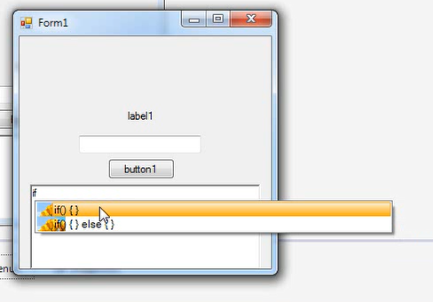

من ضبط فیلم های آموزشی رو از سال سوم دبیرستان شروع کردم. یکی از آشناها گیر داده بود که بیا به من کار با کامپیوتر رو یاد بده. میخواست کار های خیلی ساده رو بتونه انجام بده. در حد کار های اداری روتین مثل پرینت گرفتن و نصب برنامه و از این قبیل کار ها. حجم مطالب پکیج های آموزشی موجود در بازار هم زیاد بود. این نمیخواست ICDL یاد بگیره. منم راستش حوصله نداشتم و امتحان نهایی هم داشتم و اینم ول نمیکرد. منم گفتم بذار فیلم آموزشی ضبط میکنم و همون نکات کاربردی رو برات توضیح میدم. اینجا بود که اولین فیلم آموزشی خودم رو ضبط کردم.
سال ۹۲ که وارد دانشگاه شدم با سایت دانشجویار آشنا شدم. دانشجویار اون موقع تازه تاسیس بود و تعداد مدرسینش خیلی کم بود. منم اون موقع تازه سیشارپ رو داشتم یاد میگرفتم و تو اوج قله حماقت نمودار دانینگ کروگر بودم! بهشون ایمیل زدم که من دوست دارم به عنوان مدرس توی سایتتون آموزش بذارم. یه نمونه آموزش هم براشون فرستادم و پذیرفته شدم.
فیلمی که به عنوان نمونه براشون فرستادم نحوه ساخت AutoComplete توی سیشارپ بود که یه متنی رو که تایپ میکردی، ادامه رو پیشنهاد میداد. برنامه این بود :

کارم این شده بود که میرفتم تو سایت CodeProject و سورس یه برنامه جالبی که به چشمم میخورد رو دانلود میکردم و کدش رو میخوندم و بعد فیلم آموزشیش رو ضبط میکردم و توی دانشجویار میذاشتم. همه آموزش ها هم رایگان توی سایت قرار میگرفت ولی من یه مبلغ کمی از مدیر سایت دریافت میکردم. توی اون آموزش ها سوتی هم زیاد دادم که طبیعی بود اما حداقل برنامه کار میکرد 🙂
نظر شخصی من اینه که کسی که یه مبحثی رو خوب تدریس میکنه دلیل نمیشه که در عمل هم توی اون مبحث خوب باشه و برعکس، کسی که یه مبحثی رو در عمل خوب بلده دلیل نمیشه که بتونه خوب هم تدریس کنه. به خصوص تو حوزه برنامه نویسی این موضوع خیلی مشهوده. من اون آدمه بودم که در عمل خوب نبود، نحوه تدریسش هم ضعیف بود. البته به مرور داشتم بهتر میشدم.
یه مدت که گذشت مدیر سایت http://w3-farsi.com به من ایمیل زدند که بیا با هم همکاری داشته باشیم. دورانی رو تصور کنید که بهترین کتاب های فارسی برای برنامه نویسی کتاب های جعفرنژاد قمی بودند. کتاب های دیگه هم به همون افتضاحی جعفرنژاد قمی بودند. توی این دوران، چنین کتاب های فوق العادهای رو نوشته بودند. نثرش به شدت ساده و روان بود. به نظرم هنوز هم بهترین کتاب های فارسی حوزه برنامهنویسی محسوب میشه. گفتند بیا از روی کتاب سیشارپ، ویدئو ضبط کن. دیگه نیاز نیست دنبال جمع کردن سرفصل باشی یا بخوای فکر کنی که چی بگی.
منم قبول کردم و کل تابستون طول کشید که آموزش رو ضبط کنم. فن بیانم نسبت به آموزش های قبلی که ضبط کرده بودم بهتر شده بود. اما بازم به نظرم قابل قبول نبود. لحن صحبت میتونست بهتر باشه. با وجود اینکه خیلی از آموزش استقبال شده بود ولی من بخش هایی که به نظرم فن بیان خوبی نداشتم یا نتونسته بودم مفهوم رو به خوبی منتقل کنم رو دوباره ضبط کردم. حتی تفاوت فن بیانم بین قسمت های اول آموزش و قسمت های آخر آموزش کاملا مشهود بود. هر چند وقت یکبار هم به خریداران ایمیل میزدم و نظرشون رو میپرسیدم. ۹۰ درصد راضی بودند. ۱۰ قسمت اول رو هم رایگان گذاشته بودم و به شدت تاکید داشتم که قبل از خرید ۱۰ قسمت مقدماتی رو ببینن، اگر راضی بودن آموزش رو بخرن. خیلی روی این موضوع تاکید داشتم. چون نمیخواستم طرف آموزش رو بخره بعد ببینه از مدل تدریس خوشش نمیاد و ناراضی بشه. روی سرفصل هم خیلی تاکید داشتم. همیشه میگفتم اگر دنبال مبحث خاصی هستید سرفصل ها رو نگاه کنید یا کامنت بذارید و بپرسید. البته اینجوری هم نبود که همه چیز بینقص باشه و هیچ کسی هم ناراضی نباشه. افرادی بودند که ناراضی بودند ولی تعداد افراد راضی خیلی بیشتر بود. در کل شما هیچ وقت نمیتونید همه رو راضی نگه دارید.
گذشت و دیدیم که آموزش سیشارپ خوب دراومد، پیشنهاد دادند که آموزش جاوا رو هم ضبط کنم. من از اشتباهاتی که تو ضبط آموزش سیشارپ داشتم درس های خوبی گرفته بودم. توی ضبط آموزش دیگه عجله نکردم. گفتم ۶ ماه هم طول بکشه مهم نیست. به جاش کیفیت خوب باشه. خیلی از جاها فراتر از کتاب توضیح دادم. یعنی هر مبحثی که میخواستم فیلمش رو ضبط کنم قبلش چندین رفرنس رو میخوندم که یه موقع چیزی رو اشتباه نگم. میکروفون حرفهای هم خریده بودم. روز اولی که آموزش رو منتشر کردم ترکوند! یعنی خیلی استقبال شد. آموزش جاوا رقیب رایگان و پولی زیاد داشت. اما یه چیزی که اونا نداشتند حل تمرین و پروژه بود. این آموزش جای خودش رو بین دانشجو ها پیدا کرد. دانشجو هدفش چیه؟ پاس کردن درس. وجود حل تمرین توی آموزش باعث شد قشر دانشجو جذب آموزش بشه. البته این قضیه نکته منفی هم بود. دانشجو جماعت پول نمیده. عموما یه نفر که میخره یه بقیه هم میده. نکته بامزه هم اینه که یه دفعه یکی از دوستانم تعریف میکرد که رفیقش بهش گفته آره میخوای جاوا یاد بگیری یه آموزش دارم خیلی خوبه. بعد که براش روی فلش ریخته دیده آموزش منه :))))
دلیل اینکه آموزش جاوا رو رایگان تو یوتیوب گذاشتم اینه که خیلی ساله گذشته و من هم دیگه قرار نیست آموزش ها رو آپدیت کنم. فروش آموزش به طور کلی خیلی کم شده ولی زمانی که یه تخفیف خیلی خوب (مثلا ۹۰ درصد) میخوره افراد زیادی میان میخرن. این نشون میده خواهان داره ولی قیمت آموزش بالاست که واقعا دست من هم نیست. سیاست فروش هر سایت فرق داره. مشاهده رایگان ویدئو ها هم با این شرطه که توی یوتیوب دیده بشه. همچنین فایل ها و سورس کد های آموزش رو هم توی یوتوب نذاشتم و اگر کسی بخواد باید آموزش رو بخره. آموزش رو از طریق Playlist زیر میتونید مشاهده کنید :
حالا چرا آموزش سیشارپ رو نذاشتم؟ از آموزش سیشارپ راضی نیستم. قدیمی هم شده. البته برای مباحث پایهای هنوز میتونه کمک کنه ولی اگر اهل خوندن کتاب هستید توصیه میکنم کتاب سیشارپ سایت w3-farsi.com رو بگیرید.
nb.neighbours()
| title | date | |
|---|---|---|
| prev | در مرکز تبادل کتاب تهران چه میگذرد؟! | ۱۴۰۲/۰۵ |
| next | کلابهاوس در آتش — داستان هک کلابهاوس | ۱۴۰۲/۰۶ |